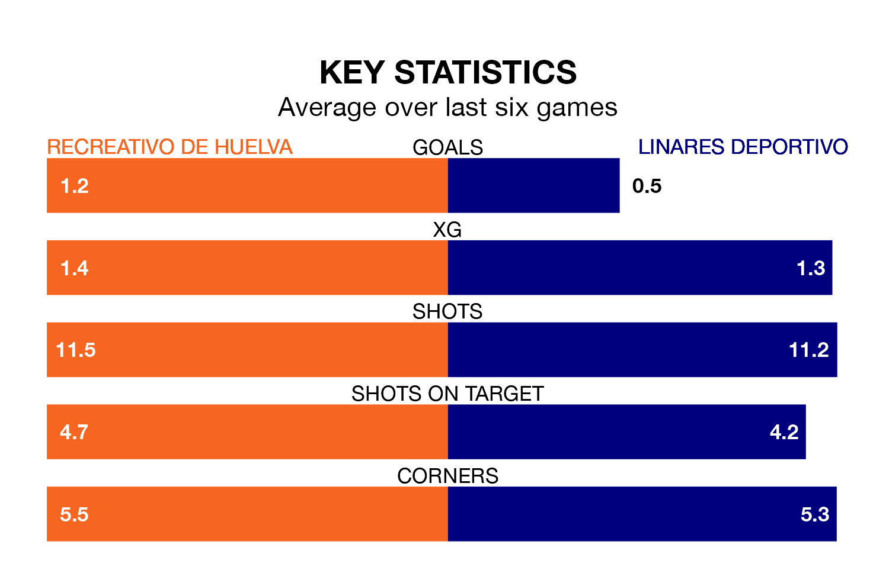

Struggling Linares Deportivo face Recreativo de Huelva away at the Estadio Nuevo Colombino on Sunday looking to build on a win in their last league outing.
After securing all three points with a 1-0 victory over CD Castellón on April 21, Linares Deportivo sit 17th in Primera Division RFEF Group 2.
They travel to play a Recreativo de Huelva side sixth in the standings, who lost in their last match, 1-0 against Atlético Sanluqueño CF, on April 20.
With Rubén Ramos González between the sticks, Recreativo de Huelva can rely on one of the league's safest pair of hands. He has kept 11 clean sheets in his 22 appearances this season, and no 'keeper has prevented the opposition scoring more often in Primera Division RFEF Group 2.
In Linares Deportivo's net, Samuel Casado Conde has five clean sheets in 17 games. He has conceded a goal every 67 minutes, 60% more often than the 104 minutes between goals for Ramos González.
With 27 goals in 33 games so far this season, the visitors are scoring at below the league average rate with 0.8 goals per game. And they are conceding more than average, letting in 44 goals at a rate of 1.3 per game.
The home team, meanwhile, are average scorers, with 1.1 goals per game. They have conceded 0.9 goals per game.
Recreativo de Huelva are in mixed form in Primera Division RFEF Group 2, with two wins and two draws from their last six games.
With a win and two draws over that period, Linares Deportivo's form is worse – they have taken five points from 18, compared to Recreativo de Huelva's eight.
Updated: 07:59 (UTC), 26/04/24